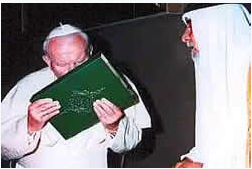
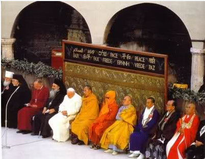

.
Armagedon
„I widziałem trzy duchy nieczyste jakby żaby wychodzące z paszczy smoka i z paszczy zwierzęcia, i z ust fałszywego proroka; (14) a są to czyniące cuda duchy demonów, które idą do królów całego świata, aby ich zgromadzić na wojnę w ów wielki dzień Boga Wszechmogącego. (15) Oto przychodzę jak złodziej; błogosławiony ten, który czuwa i pilnuje szat swoich, aby nie chodzić nago i aby nie widziano sromoty jego. (16) I zgromadził ich na miejscu, które po hebrajsku nazywa się Armagedon.” (Obj.16:13-16).
Wielu sądzi bezpodstawnie, że mowa tu o prawdziwej potyczce na przykład o najeździe armii rosyjskiej, chińskiej czy muzułmańskiej na współczesny Izrael lub walce zbuntowanych ludzi przeciwko Panu Jehoszua w dniu Jego przyjścia, a więc o wielką bitwę w dolinie Megiddo.
Między innymi słowa apostoła Pawła świadczą przeciwko takiej literalnej interpretacji:
„Przywdziejcie całą zbroję Bożą, abyście mogli ostać się przed zasadzkami diabelskimi. (12) Gdyż bój toczymy nie z krwią i z ciałem, lecz z nadziemskimi władzami, ze zwierzchnościami, z władcami tego świata ciemności, ze złymi duchami w okręgach niebieskich.”
(Efezjan 6:11-12).
Armagedon ma objąć cały świat (Objawienie 14:20, 16:14), a więc co najmniej państwa Europy (zobacz wstęp do Apokalipsy, choć w tym przypadku chodzi dosłownie o cały świat), tymczasem dolina Megiddo ma ledwie kilkanaście kilometrów!
Przez dolinę Megiddo przepływa potok Kiszon, a nie rzeka Eufrat, którą Apokalipsa wymienia w kontekście Armagedonu.
Zamierzona jest tutaj aluzja do egipskiej plagi żab, gdy te roiły się w domach ludzi i właziły na nich (2 Mojżesza 8:1). Szeroko zakrojona działalność tych podobnych do żab duchów wskazuje na skalę, zasięg kłamstwa i buntu przeciw Bogu.
Armagedon jest symbolem ostatniej próby zawładnięcia sercami i umysłami ludzi przez złego i zwiedzenia prowadzącego na symboliczne miejsce zwane Armagedon.
Nie wojną narodów, lecz kulminacją duchowego boju między Chrystusem i szatanem.
Jego podmiotem jest rozproszony po świecie lud Boży, a nie militarne starcie.
Do walki nie dojdzie, bo jakżeby władcy ziemi mogliby sprostać Wszechmogącemu Bogu?
Czas ARMAGEDONU = czas EKUMENIZMU.
Proces pośpiesznego prowadzenia trynitaryzacji religijnej Europy, tak obiecująco zaawansowany przez gorliwego katolika - Hitlera, został nagle przerwany (szósta czasza), przez nominalnie ateistyczną Armię Czerwoną, w roku 1945.
Papiestwo z czasem zrozumiało, że nie osiągnie swych celów, tym samym sposobem, co dawniej, czyli „ogniem i mieczem”, dlatego przyszedł czas na założenie maski pokoju i zmianę taktyki, co stało się podczas II Soboru Watykańskiego (1962-1965 rok).
Apostoł Jan nawiązuje tu do plagi żab, gdyż była ostatnią, jaką magowie faraona podrobili utwierdzając naród w zwiedzeniu, którego byli autorami (zobacz 2 Mojżesza 8:7,18).
Trzy żaby wychodzące z ust Smoka, Bestii i Fałszywego Proroka reprezentują apogeum zwiedzenia - odciągnięcie ludzi od prawdziwej Ewangelii oraz przyjęcia wiary w trzech bogów, które Apokalipsa utożsamia z gromadzeniem się ludzi na miejscu zwanym Armagedon.
Jest to okres łączenia się fałszywych kościołów i fali ekspansji fałszywych nauk.
Jest to ostatni wielki DUCHOWY BÓJ, wyrażony w symbolu natarczywych, wszędobylskich żab, które wyobrażają ostatnie wysiłki:
1. „Smoka”, który symbolizuje poganizm, którego esencją zawsze było i jest wiara w więcej niż jednego Boga. Gdy sięgniemy w najdalszą przeszłość to ludzkie cywilizacje zawsze miały koncepcje wielobóstwa, najczęściej związane z trójcą w różnych postaciach. Nauka o trójcy zakorzeniona jest w cywilizacji Babilonu, Indii, Chaldei, Fenicji, Egiptu, Rzymu, Skandynawii, Germanii czy u Indian. Jest powszechną cechą kultów pogańskich.
Koncepcja trójcy poprzez Babilon rozpowszechniła się na całym świecie, dlatego też Babilon w Biblii jest symbolem odstępstwa, a główny kult Babilonu to trójca, która także poprzez inne religie rozprzestrzeniła się w świecie, co zresztą potwierdzają źródła naukowe:
„Platońska Trójca, będąca tylko przedstawieniem starych, potrójnych bóstw pierwotnych ludów, wydaje się być racjonalną, filozoficzną Trójcą atrybutów, dających życie trzem hipostazom lub boskim osobom, nauczaną przez wszystkie kościoły chrześcijańskie...Te koncepcje boskiej Trójcy greckich filozofów (IV w.p.n.e.) mogą być znalezione we wszystkich starożytnych (pogańskich) religiach.” (Nouveau Dictionnaire Universal vol.2, 1467).
Nimrod był założycielem starożytnej babilońskiej religii (odkrycia archeologiczne Henrego Layarda ukazują trójkąt równoramienny, wyobrażający równość trzech bogów, którzy łączą się w jednego boga).
Kiedy Cyrus Wielki podbił Babilon, system religijny Babilonu i babiloński model kapłaństwa powędrował do Pergamonu, a następnie został zaadoptowany w Rzymie, by w ostateczności być zaadoptowanym przez kościół rzymskokatolicki.
2. „Bestii”, która symbolizuje mocarstwa, ludy i narody, gdyż „zwierzęta” oznaczają potęgi tego świata (Daniela 7:23), religie, które przejęły od smoka TRÓJCĘ i nawołują do jej przyjęcia, co nazwane zostało w Księdze Objawienia „znamieniem bestii”.
Na przykład w kościele ADS fundamentalna zasada wzięta z konstytucji Światowej Rady Kościołów w roku 1980, mówi:
„Jest jeden Bóg: Ojciec, Syn i Duch Święty”.
Jest to zasada najważniejsza dla prawie wszystkich istniejących wyznań. Jest to zasada wzięta z Babilonu, która następnie została przejęta między innymi przez pogański Rzym, który w 12 rozdziale Apokalipsy (wraz z szatanem) był symbolizowany przez smoka. Następnie zasada ta z pogańskiego Rzymu, została przekazana narodom średniowiecznej Europy, poprzez sukcesora pogańskiego Rzymu - kościół rzymskokatolicki, dla którego jest to najważniejszy dogmat, na którym opierają się wszystkie inne nauki tego kościoła.
Również świeckie narody ściśle współpracują w tym temacie. W wywiadzie udzielonym włoskiej agencji SIR, Buzek powiedział, że politycy europejscy powinni słuchać tego, co ma do powiedzenia taki „człowiek wiary i kultury jak Joseph Ratzinger”. Dodał, że papież jest nie tylko głową państwa, ale przede wszystkim zwierzchnikiem Kościoła katolickiego – „wspólnoty wierzących, która ukształtowała Europę”.
3. „Fałszywego Proroka”, czyli papiestwo – słowo Watykan po łacinie znaczy: „Przepowiadający przyszłość”.
Jak już wspomniałem odkrycia archeologiczne pokazują trójcę w starożytnym Babilonie ukrytą pod postacią trójkąta równoramiennego, wskazującą na równość trzech bogów. Ten sam, identyczny symbol przejął kościół rzymskokatolicki.
Wszystkie te wysiłki po to, aby ludzie u kresu istnienia tego świata uwierzyli w trzech bogów, których także doskonale symbolizują tutaj „trzy duchy nieczyste”.
„Żaby” rozpowszechniają kłamstwo, o trójjedynym/w trójcy bogu, zwodząc i okłamując ludzi, którzy nie uwierzyli prawdzie, jak napisano:
„I pojmane zostało zwierzę, a wraz z nim fałszywy prorok, który przed nim czynił cuda, jakimi zwiódł tych, którzy przyjęli znamię zwierzęcia.” (Objawienie 19:20).
Swoją rolę odgrywają również rozmaite ugrupowania i religie, które co prawda nie wierzą w trzech bogów podobnie jak demony „Ty wierzysz, że Bóg jest jeden? Dobrze czynisz; demony również wierzą i drżą” (Jakuba 2:19), ale odciągają od wiary w Jedynego Syna Bożego i głoszą „innego Chrystusa”, „inną Ewangelię” lub innych pośredników do Boga, one również zdecydowanie zasłużyły sobie na tytuł „fałszywego proroka”.
Jest ich mnóstwo, jednakże wspomnę o dwóch większych:
- Islam, druga, co do wielkości pod względem wyznawców religia świata – nie uznaje Syna Bożego - głosi, że to bluźnierstwo mówić, że Najwyższy miał Syna i głupota wierzyć, że ktokolwiek zmartwychwstał…
„a jeśli Chrystus nie został wzbudzony, daremna jest wiara wasza; jesteście jeszcze w swoich grzechach. (34) Opamiętajcie się nareszcie i nie grzeszcie; albowiem niektórzy nie znają Boga” (1 Koryntian 15:17, 34).
„Zaprawdę, Allach jest Jedynym Bogiem. On jest Święty, daleki od posiadania syna” (Koran 4, 171).
„I powiadają: „Miłosierny Bóg wziął sobie syna”. (...) Niechybnie wypowiedzieliście rzecz najbardziej ohydną. (...) Albowiem przypisują syna Bogu Miłosiernemu” (Koran 19:90-91).
„Ten jest antychrystem, kto podaje w wątpliwość Ojca i Syna.” (1 Jana 2:22 porównaj z 1 Jana 2:23, 5:5, Jana 14,6, 17:3).
Oto słowa wypowiedziane przez Jana Pawła II do młodych Marokańczyków w 1985 roku:
„My, chrześcijanie i muzułmanie, mamy wiele rzeczy wspólnych, tak, jako ludzie wierzący, jak i jako istoty ludzkie (...) Wierzymy w tego samego Boga, w Boga żywego, w Boga, który stworzył świat i doprowadza swe stworzenia do ich doskonałości”.
Trudno nie przyznać mu racji i się nie zgodzić z tym, że wierzą w tego samego boga – „władcę, który rządzi w powietrzu, ducha, który teraz działa w synach opornych” (Efezjan 2:2).

Powyższe zdjęcie przedstawia papieża Jana Pawła II pod koniec audiencji udzielonej patriarsze Rafaelowi I z Iraku, 14 maja 1999 roku.
Papież całuje świętą księgę muzułmanów, Koran.
Pontifex Maximus najwyraźniej zapomniał, że w Koranie Jehoszua Chrystus jest jedynie jednym z „posłańców” Allacha, który nie zmartwychwstał…
- Organizacja świadków Jehowy – nie tylko sprytnie umniejsza rolę Pana Jehoszua, ale wbrew Słowu, głosi, że Chrystus jest archaniołem Michałem…
„Do którego bowiem z aniołów powiedział kiedykolwiek: Tyś jest Synem moim, Jam cię dziś zrodził? I znowu: Ja mu będę ojcem, a on będzie mi synem? (6) I znowu, kiedy wprowadza Pierworodnego na świat, mówi: Niechże mu oddają pokłon wszyscy aniołowie Boży”. (Hebrajczyków 1:5-6).
„Bo gdy przychodzi ktoś i zwiastuje innego Jezusa... znosicie to z łatwością.” (2 Koryntian 11:4).
Ponadto odcina drogę zbawienia swoim wyznawcom, gdyż okłamuje ich, wmawiając, że narodzić się z ducha Bożego może wyłącznie ich elitarna grupa „144 tysięcy pomazańców”.
Pomijając już fakt kompletnego niezrozumienia przez nich, kim są 144 tysiące z Księgi Objawienia, zwrócić należy uwagę na tę iście diabelską naukę, gdyż Pan powiedział, że „kto nie narodzi z wody i z Ducha, nie może wejść do Królestwa Bożego.” (Jana 3:5), a apostoł Paweł śmiało oznajmiał wszystkim naśladowcom Pana, że „wy nie jesteście w ciele, lecz w Duchu, jeśli tylko Duch Boży mieszka w was. Jeśli zaś kto nie ma Ducha Chrystusowego, ten nie jest jego.” (Rzymian 8:9).
Tak, więc odmawiając swoim szeregowym współwyznawcom „cudu nowonarodzenia”, zamykają im wejście do Królestwa Bożego i czynią ich dziećmi diabła, gdyż, kto nie ma ducha Bożego – Chrystusowego, ten nie jest dzieckiem Bożym, właśnie po tym poznaje się owce i kozły, gdzie owca to tylko i wyłącznie ten, kto „z Boga się narodził. (10) Po tym poznaje się dzieci Boże i dzieci diabelskie” (1 Jana 3:9-10).
Nie ma trzeciej klasy - „drugich owiec”, całe Pismo jasno mówi wyłącznie o dwóch rodzajach ludzi, natomiast jest wielu zwodzicieli, usypiających czujność, szerzących kłamstwa i stawiający się w miejsce Chrystusa, na przykład głosząc, że są „jedynym kanałem łączności – pośrednikami do Chrystusa lub Boga”, że ich należy słuchać, a kto zaczyna słuchać Chrystusa – tego wykluczają i odmawiają reszcie swych wyznawców nawet prawa do zwykłego przywitania się na ulicy z takim „odstępcą” od jedynej słusznej i jednozbawczej religii.
„Ciało kierownicze śJ” poprzez stworzenie fikcyjnej drugiej-gorszej grupy owiec, którą rzekomo mają stanowić szeregowi „świadkowie”, odcina ich od jednej wspólnej niebiańskiej nadziei - nagrody dla wszystkich dzieci Bożych. Ich manipulacje sprawiają, że szeregowi wyznawcy zmuszeni są traktować Słowo wybiórczo – odnosząc pewne wypowiedzi tylko do 144 tysięcy uzurpatorów, w których uwierzyli i których zdecydowali się słuchać bardziej niż Chrystusa, a pewne wypowiedzi do siebie, wedle subiektywnej, a raczej narzuconej im oceny danych wersetów, co w rezultacie skutkuje brakiem możliwości nabrania przez nich wiary na wzór wiary Syna Bożego - wiary, która zbawia, która sprawia, że stajemy się dziećmi pełnymi miłości do naszego Ojca, dziećmi, które pełne zaufania i posłuszeństwa wynikającego z tej miłości są wpatrzone i słuchają wyłącznie swojego Pasterza, Pana – Syna Bożego, w którego imieniu jedynie jest Zbawienie, Droga, Życie i Prawda. Prawdziwe dzieci starają się nawiązać stosunki z Bogiem Ojcem na wzór stosunków, jakie ma Bóg Ojciec ze swoim Jednorodzonym Synem.
Świadkowie głoszą wiele zwodniczych nauk, które podważają Słowo Boże, ich własna ewangelia głosi, że to, czego dokonał Jehoszua to za mało i „sprawiedliwi” ludzie (drugie owce) dopiero w wyimaginowanym tysiącleciu będą musieli sobie zapracować własnymi uczynkami na życie wieczne (dlatego między innymi usunęli ze swojego przekładu Biblii słowo „łaska”, zastępując je słowem „życzliwość”. Łaska oznacza uniewinnienie skazanego, natomiast życzliwość oznacza sympatię dla skazanego, a to ogromna różnica).
„Albowiem łaską zbawieni jesteście przez wiarę, i to nie z was: Boży to dar; (9) nie z uczynków, aby się kto nie chlubił.” (Efezjan 2:8-9).
„Bo... gdy przyjmujecie innego ducha, którego nie otrzymaliście, lub inną ewangelię, której nie przyjęliście, znosicie to z łatwością.” (2 Koryntian 11:4).
Kolejną szkodliwą nauką jest twierdzenie, że Pan niewidzialnie już powrócił w 1914 roku i od tamtego czasu zmartwychwstanie ich „elitarnej grupy 144 tysięcy” już się dokonuje.
„A pospolitej, pustej mowy unikaj, bo ci, którzy się nią posługują, będą się pogrążali w coraz większą bezbożność, (17) a nauka ich szerzyć się będzie jak zgorzel; do nich należy Hymeneusz i Filetos, (18) którzy z drogi prawdy zboczyli, powiadając, że zmartwychwstanie już się dokonało, przez co podważają wiarę niektórych” (2 Tymoteusza 2:16-18).
Okazują fałszywymi prorokami, także przez kilkukrotne niespełnione zapowiedzi końca świata (śJ - 1914, 1918, 1925, 1975 i „nie przeminie to pokolenie 1914), choć nawet Syn Boży nie zna dnia i godziny, oni znają, ich „niewolnik” wie lepiej i więcej…
Dzięki fałszywym proroctwom i zapowiedziom końca świata sami o sobie, dają świadectwo, gdyż jak piszą „Prorokują oni gdyż występują w imieniu Boga” (Strażnica nr 8 z 1972, s.24).
A przecież Bóg powiedział:
„Wszakże prorok, który ośmieli się mówić w moim imieniu słowo, którego mu nie nakazałem mówić, albo który będzie przemawiał w imieniu innych bogów, taki prorok poniesie śmierć. A jeśli powiesz w swoim sercu: Po czym poznamy słowo, którego Pan nie wypowiedział? Jeżeli słowo, które wypowiedział prorok nie w imieniu Pana, nie spełni się i nie nastąpi, jest ono słowem, którego Pan nie wypowiedział, lecz w zuchwalstwie wypowiedział je prorok; więc nie bój się go.” (5 Mojżesza 18:2-22).
Szczególnie w XX wieku pojawiło się naprawdę mnóstwo sekt, odłamów, organizacji podobnych do świadków Jehowy. Dlatego między innymi o nich czytamy:
„A pozostali byli pobici mieczem wychodzącym z ust jeźdźca na koniu, i wszystkie ptaki nasyciły się ich ciałami.” (Objawienie 19:21).
Działalność wszystkich trzech podmiotów (smok, bestia, prorok) skutecznie także przyczynia się do pojawiania się całkowitego braku wiary w Boga i Jego Syna.
„A to jest żywot wieczny, aby poznali ciebie, jedynego prawdziwego Boga i Jezusa Chrystusa, którego posłałeś.” (Jana 17:3).
Obecnie obserwujemy te zmagania na własne oczy - żyjemy właśnie w tym okresie czasu, w którym narody zgromadziły się i nadal tłumnie gromadzą na miejscu, „które po hebrajsku nazywa się Armagedon”.
Zalążek tej działalności powstał już na początku XX wieku, w czasie wylewania szóstej czaszy gniewu, tak, aby w pełni rozwinąć skrzydła od połowy XX wieku, kiedy ruch zwany „EKUMENIZMEM”, rozrósł się na skalę światową.
Niezbity i niesamowity tego dowód znajdujemy między innymi w Piśmie Świętym, gdzie w rozdziale 16, a wersecie 14 księgi Objawienia użyto greckiego słowa „OIKOUMENE”, które po przetłumaczeniu oznacza „EKUMENIA” i wyraża ideę „całego zamieszkałego świata”!
Na dążenie do jedności można by wybrać wiele innych słów, ale wybrano właśnie to słowo „ekumenia - oikoumene”.
„a są to czyniące cuda duchy demonów, które idą do królów całego świata („oikoumene”), aby ich zgromadzić na wojnę w ów wielki dzień Boga Wszechmogącego.” (Obj.16:14).
W 1948 roku powstała Światowa Rada Kościołów – ekumeniczna organizacja religijna zrzeszająca obecnie ponad 360 kościołów.
Datę tą uważa się za oficjalny początek międzywyznaniowego i międzynarodowego ruchu ekumenicznego.
Encyklopedia katolicka definiuje ekumenizm w sposób następujący:
„Ekumenizm to poglądy i postawy wyrażające dążenie do zjednoczenia chrześcijan wszystkich wyznań w jednym Kościele Chrystusowym”.
Oto cytat z oficjalnej strony kościoła rzymskokatolickiego:
„Termin ekumenizm jest najczęściej używany na określenie ruchu na rzecz jedności chrześcijan lub jedności Kościoła. Słowo ekumenizm wywodzi się z klasycznego języka greckiego – oikoumene – gdzie wyrażało ideę "całego tego zamieszkałego świata”.Odtąd wszelkie zaangażowanie na rzecz jedności chrześcijan nazywa się popularnie ekumenizmem lub ruchem ekumenicznym.” (Ekumenizm.pl).
Ruch ekumeniczny prowadzi dialog teologiczny, który gromadzi - jednoczy rozmaite religie pod jedną flagą - WIARĄ W TRÓJCĘ (trójjedynego boga), którą wyobrażają właśnie: „trzy duchy nieczyste”.
Jest to pierwszy i podstawowy warunek przystąpienia do grupy ekumenicznej.
Fundamentalna zasada nr 1, wzięta z konstytucji Światowej Rady Kościołów w roku 1980, mówi:
„Jest jeden Bóg: 1. Ojciec, 2. Syn3. Duch Święty”.
Jak już wspominałem jest to zasada wzięta z Babilonu, przejęta przez kościół rzymskokatolicki, który następnie spłodził między innymi protestanckie córy, opierające się na tej fundamentalnej zasadzie.
Esencją pogaństwa jest wiara w więcej niż jednego Boga.
W tym punkcie zgadzają się ze sobą: Kościół rzymskokatolicki, Kościół greckokatolicki, prawosławny i nieomal wszystkie ugrupowania protestanckie, które - jakkolwiek poróżnione przez mniej istotne różnice doktrynalne - jednym głosem wyznają, że:
„Ojciec jest osobowym Bogiem, Syn jest osobowym Bogiem i Duch Święty jest osobowym Bogiem. Mimo to nie ma trzech Bogów”.
Zgodnie z tym wierzeniem, wszystkie trzy osoby trójcy są „współwieczne i sobie równe”, w przeciwieństwie do tego, czego uczył Syn Boży, który nie znał żadnej trzeciej osoby:
„wierzcie w Boga i we mnie wierzcie” (Jana 14:1).
Zapomniał o osobie ducha? Czy nie istnieje? Poza tym Syn nigdy nie uważał się za równego Ojcu:
„idę do Ojca, bo Ojciec większy jest niż Ja.” (Jana 14:28).
Armagedon symbolizuje ostatni wielki wysiłek szatana, aby unicestwić tych, którzy:
„strzegą przykazań Bożych i trwa przy świadectwie o Jezusie” (Objawienie 12:17).
Jakich przykazań?
„Słuchajże Izraelu: Pan, Bóg nasz, Pan jeden jest.” (5 Mojżesza 6:4).
Chrystus będąc zapytany, jakie jest największe przykazanie również odpowiedział:
„Jezus odpowiedział: Pierwsze przykazanie jest to: Słuchaj, Izraelu! Pan, Bóg nasz, Pan jeden jest. (Marka 12:29).
Jakiego świadectwa o Jehoszua?
„A któż może zwyciężyć świat, jeżeli nie ten, który wierzy, że Jezus jest Synem Bożym? (1 Jana 5:5).
Obecnie, rozwydrzony świat, religijnie i cywilizacyjnie, w pośpiechu jednoczy się wokół boga trójosobowego. Wszystkie masmedia trąbią o tym całkiem otwarcie.
Na świecie trwa masowa indoktrynizacja wiary w trzech bogów.
NIE ULEGA WĄTPLIWOŚCI, ŻE OBECNIE ŻYJEMY WŁAŚNIE W TYM OKRESIE!
Wiara w trójcę i trójjedynego boga jest ZNAMIENIEM BESTII i apogeum zwiedzenia prowadzącym na miejsce zwane ARMAGEDON.
Dla świadomie wierzących uczestników Przymierza, chrześcijan, zapieczętowanych duchem niepoliczalnej miłości Boga, nie ma wątpliwości, że Jehoszua to Jednorodzony Syn Boży, który prowadzi swych wiernych wąską drogą do górnego Jeruzalem.
Syn to nie Ojciec! Kto tej drogi wiary nie przyjmuje, lecz jest „słusznie religijny”, ten idzie do Rzymu w myśl przysłowia:
„wszystkie drogi prowadzą do Rzymu”.
W 1970 roku w posoborowym dokumencie wyraźnie określone zostały intencje dialogu ekumenicznego kościoła katolickiego:
„Dialog sam w sobie nie jest celem (...) Służy raczej zmianie sposobu myślenia, zachowania i codziennego życia tych wspólnot. Tą drogą zamierza przygotować ścieżkę do ich jedności w wierze na łonie jedynego i widzialnego Kościoła: stąd krok po kroku, w miarę jak eliminowane są przeszkody do pełnej eklezjalnej komunii, wszyscy chrześcijanie zbiorą się na wspólnej celebracji Eucharystii w jedności jedynego Kościoła, jaką Chrystus od początku obdarzył swój Kościół. Jedność ta, jak wierzymy, mieszka w Kościele katolickim, jako coś, czego nie może on nigdy stracić”
(Refleksje i sugestie dotyczące dialogu ekumenicznego”, 14 VIII 1970).
Zasady i cele polityki papieskiej zawsze były te same, a papież Benedykt XVI tylko je potwierdził:
„Głównym celem ruchu ekumenicznego jest jedność wszystkich chrześcijan zgromadzonych w jednym, świętym, powszechnym i apostolskim Kościele Chrystusowym.
Jest to, więc ruch przywracający Kościołowi jego prawdziwą katolickość”.
„Wchodźcie przez ciasną bramę; albowiem szeroka jest brama i przestronna droga, która wiedzie na zatracenie, a wielu jest takich, którzy przez nią wchodzą. (14) A ciasna jest brama i wąska droga, która prowadzi do żywota; i niewielu jest tych, którzy ją znajdują.” (Mateusza 7:13-14).
Poza okultyzmem kościoła rzymskokatolickiego oraz modłami reszty ludów do demonów, ukrytych między innymi pod postacią trójjedynego boga, obserwujemy na świecie eskalację spirytyzmu i rozwiązłości – w mediach, książkach, internecie, bajkach, wszędzie…
Miłość stała się najchętniej omawianym atrybutem Boga. Została jednak zdegradowana do sentymentalnego uczucia, które prawie nie czyni różnicy między dobrem a złem.
Natomiast sprawiedliwość Boża i Jego wymagania, trzymane są poza zasięgiem wzroku. Atrakcyjnie brzmiące teorie i fantazje pociągają, prowadząc ludzi do odrzucenia Słowa, jako fundamentu wiary.
Chrystus jest odrzucony tak samo jak niegdyś, zaś ludzie są tak zaślepieni przez szatana, że nie potrafią rozpoznać zwiedzenia.
Szatan grający rolę TRZECIEGO, czyli duch Świętego, podrabia Jego działanie powodując wielkie ożywienie przypominające Zielone Świątki.
Przy pomocy fałszywych darów mówienia językami, uzdrawiania, cudów charyzmatów, które obecnie pociągają miliony ludzi na świecie (np. Benny Hinn, zielonoświątkowcy, itp.) oraz objawień na przykład Maryjnych, demony utwierdzą ludzi w fałszywym przekonaniu, że służą Bogu.
Zwodziciel podrabia, to, co zapisano w Piśmie:
„Kiedy nadszedł wreszcie dzień Pięćdziesiątnicy, znajdowali się wszyscy [uczniowie] razem na tym samym miejscu. Nagle dał się słyszeć z nieba szum, jakby uderzenie gwałtownego wichru, i napełnił cały dom, w którym przebywali. Ukazały się im też języki jakby z ognia, które się rozdzieliły, i na każdym z nich spoczął jeden. I wszyscy zostali napełnieni Duchem Świętym, i zaczęli mówić obcymi językami, tak jak im Duch pozwalał mówić.” (Dzieje 2:1-4).
„I nic dziwnego; wszak i szatan przybiera postać anioła światłości. (15) Nic więc nadzwyczajnego, jeśli i słudzy jego przybierają postać sług sprawiedliwości; lecz kres ich taki, jakie są ich uczynki.” (2 Koryntian 11:14-15).
Szatan potrafi pojawić się przed ludźmi, jako anioł światłości, w postaci Marii, a nawet Chrystusa, aby ich łatwiej zwieść. Apeluje do rozumu poprzez wzniosłe teorie, porywające idee, wywołuje zachwyt i zdobywa uczucia krasomówczym opisem miłości i miłosierdzia. Pobudza wyobraźnię i skłania do tak wielkiego mniemania o swej mądrości, że ludzie w swych sercach pogardzają Wiecznym Bogiem i Jego Synem.
Ta przebiegła istota, która ośmieliła się w czasie kuszenia zabrać Jehoszua na wysoką górę i pokazała Mu wspaniałości ziemi, aby wymusić pokłon dla siebie, ukazuje ludziom swe pokusy, tak, aby opanować umysły tych wszystkich, którzy nie znajdują się pod Bożą ochroną.
„Dziwię się, że tak prędko dajecie się odwieść od tego, który was powołał w łasce Chrystusowej do innej ewangelii, (7) chociaż innej nie ma; są tylko pewni ludzie, którzy was niepokoją i chcą przekręcić ewangelię Chrystusową. (8) Ale choćbyśmy nawet my albo anioł z nieba zwiastował wam ewangelię odmienną od tej, którą myśmy wam zwiastowali, niech będzie przeklęty!” (Galacjan 1:6-8).
Również apostołowie podrabiani przez te zwodnicze istoty, zaprzeczają temu, co napisali pod dyktando ducha Świętego, kiedy żyli na ziemi.
Zaprzeczają Boskiemu pochodzeniu Słowa Bożego, burząc fundament chrześcijańskiej nadziei, zacieniając światło, które oświeca drogę do zbawienia.
Szatan, który zwodzi mieszkańców ziemi gra w demonicznej trójcy rolę ducha świętego.
Oikoumene i krzyż symbolizujący wiarę w trzech bogów to obecnie duchowy sztandar Europy…
(Zobacz również: https://mojabiblia.github.io/j/15.html)
Podczas fałszywych objawień Maryjnych, które występują obecnie na całym świecie, demon udający śpiącą Marię, mówi tak:
„Działanie łaski mojego Płomienia Miłości, rozszerzę na wszystkie ludy i narody. Nie tylko na te, które już należą do Kościoła Katolickiego, lecz na wszystkie, które naznaczone są znakiem Krzyża mojego Boskiego Syna. Dlatego chcę, aby Płomień Miłości mojego Niepokalanego Serca znany był wszędzie, jak wszędzie na całym świecie znane jest moje Imię. Działanie Łaskie mojego Płomienia Miłości rozciąga się także na umierających i na biedne dusze w Czyśćcu cierpiące. One tak bardzo potrzebują i oczekują naszej ofiarnej modlitwy, postów i wyrzeczeń.”
Dlatego zważmy na słowa Pana wypowiedziane właśnie w tym miejscu Księgi:
„Oto przychodzę jak złodziej; błogosławiony ten, który czuwa i pilnuje szat swoich, aby nie chodzić nago i aby nie widziano sromoty jego.” (16:15).
Przyjście Pana jest u „progu drzwi”…
Tym bardziej, że na własne oczy obserwujemy wypełnianie się słów również apostoła Pawła, który zapowiadał powrót naszego Pana w czasach, kiedy odstępczy kościół wraz ze światem, inspirowany duchem antychrysta będzie nawoływał do fałszywego POKOJU!
„Sami bowiem dokładnie wiecie, iż dzień Pański przyjdzie jak złodziej w nocy. (3) Gdy mówić będą: Pokój i bezpieczeństwo, wtedy przyjdzie na nich nagła zagłada, jak bóle na kobietę brzemienną, i nie umkną.” (1 Tesaloniczan 5:2-3).
To nawoływanie oficjalnie wszem i wobec, rozpoczęło się na II Soborze Watykańskim (1962-1965), kiedy to wspomniana powyżej „kobieta brzemienna”, czyli „nierządnica” opisana w kolejnym 17 rozdziale, zmieniła taktykę, przybierając maskę „tolerancji”, nawołując do fałszywego pokoju i wiary w trzech bogów.
„mówiliście fałszywie i prorokowaliście kłamliwie, dlatego Ja jestem przeciwko wam - mówi Wszechmocny Pan. (10) Dlatego, właśnie dlatego, ze zwodzili mój lud, mówiąc: Pokój” (Ezechiela 13:6, 10).
„Sobór watykański II zapoczątkował reformę Kościoła katolickiego poprzez otwarcie go na dialog z innymi wyznaniami (dialog ekumeniczny).Podczas trwania Soboru papież Paweł VI nawiązał bliskie stosunki z patriarchą Konstantynopola Atenagorasem. 5 grudnia 1965 zostały odwołane ekskomuniki, którymi w 1054 obłożyli się nawzajem dostojnicy Kościoła rzymskiego i konstantynopolitańskiego.”(Sobór Watykański II - Monika Kowalska).
Nie tylko ekumenizm, ale i druga największa religia świata, jaką jest Islam, nawołuje do fałszywego pokoju, o którym pisał apostoł Paweł, dlatego dla nas jest to niesamowity znak, wskazujący, że niedługo to wszystko potrwa…
„Nie uprowadzaj mnie z bezbożnymi i z tymi, którzy czynią nieprawość, Którzy mówią o pokoju z bliźnimi swymi, a złość jest w sercu ich! (4) Odpłać im według czynu ich I według złości uczynków ich, Według dzieła rąk ich odpłać im, Oddaj im, jak zasłużyli! (5) Bo nie zważają na sprawy Pana, Ani na dzieła rąk jego, Przeto zniszczy ich i nie odbuduje.” (Psalm 28:3-5).
Owoce ruchu ekumenicznego można było oglądać w 1986 roku, kiedy w Asyżu na zaproszenie papieża Jana Pawła II pojawili się przywódcy wielu różnych światowych religii.
„Stolica Apostolska pragnie przyczynić się do powstania światowego ruchu modlitwy o pokój - mówił - który przekraczając granice państw i angażując wiernych wszystkich wyznań, ogarnie cały świat. (...) Jestem w trakcie konsultacji z przywódcami nie tylko różnych Kościołów i Wspólnot chrześcijańskich, ale także innych religii świata w sprawie przygotowań do spotkania na modlitwie o pokój w Asyżu.” (Jan Paweł II).
Pośród najprzeróżniejszych niekatolickich i pogańskich osobistości zaproszonych do wzięcia udziału był anglikański arcybiskup Runcie, prawosławny arcybiskup Methodios, buddysta Dalajlama, metodysta Emilio Castro, jak również wybrani hindusi, sikhowie, szintoiści, jainiści, animiści, muzułmanie, wyznawcy zoroastryzmu, żydowscy rabini, nawet szaman z indiańskiego plemienia Crow z Montany – John Pretty-on-Top.
Była to różnobarwna zbieranina wszelkiej maści kapłanów, magów, czarowników, rabinów, wróżbitów, mułłów, księży, pastorów i mnichów. Gromada ludzi czyniących to czego Bóg nienawidzi (5 Mojżesza 18:10-13).
Wszystkich miała połączyć modlitwa o pokój na świecie. Papież powiedział wówczas miedzy innymi takie słowa:
„Dzisiejsze spotkanie uważam za bardzo wymowny znak zaangażowania was wszystkich w sprawę pokoju. To, bowiem zaangażowanie przywiodło was do Asyżu.”

Oczywiście ogromną solidarność z inicjatywą papieża wyraziła Ekumeniczna Światowa Rada Kościołów, a także rządy i przywódcy państw nadesłali listy z wyrazami solidarności. Nadeszły one miedzy innymi od króla Belgów, gubernatora Kanady, prezydentów Argentyny, Austrii, Boliwii, Ekwadoru, Filipin, Hondurasu, Kolumbii, Kostaryki, Stanów Zjednoczonych, Wenezueli, od prezydenta i premiera Francji, od premiera Australii, czy Włoch.
Niechaj krzyczą POKÓJ i niechaj Pan powróci...
Po raz drugi papież zwołał takie spotkanie w 2002 roku, a w tym roku (2011) jest planowane trzecie spotkanie. Warto w tym miejscu jedynie zacytować słowa:
„Nie chodźcie w obcym jarzmie z niewiernymi; bo co ma wspólnego sprawiedliwość z nieprawością albo jakaż społeczność między światłością a ciemnością? (15) Albo jaka zgoda między Chrystusem a Belialem, albo co za dział ma wierzący z niewierzącym? (16) Jakiż układ między świątynią Bożą a bałwanami? Myśmy bowiem świątynią Boga żywego, jak powiedział Bóg: Zamieszkam w nich i będę się przechadzał pośród nich, I będę Bogiem ich, a oni będą ludem moim. (17) Dlatego wyjdźcie spośród nich i odłączcie się, mówi Pan, I nieczystego się nie dotykajcie; A ja przyjmę was” (2 Koryntian 6:14-17).
Syn Boży pozostawił Jego wiernym naśladowcom prawdziwy pokój, rozlany w sercach i umysłach, tak, iż ufnie spoglądamy w przyszłość, czekając na wielki powrót naszego Pana i zabranie nas do domu Ojca!
„Pokój zostawiam wam, mój pokój daję wam; nie jak świat daje, Ja wam daję. Niech się nie trwoży serce wasze i niech się nie lęka.” (Jana 14:27).
Ci, którzy nie przyjęli miłości prawdy (2 Tesaloniczan 2:10-11), ulegli zwiedzeniu, dając się wykorzystać.
Diabeł, gdy nie potrafi przymusić ludzi, aby odrzucili Boga, staje się ich bogiem.
Przede wszystkim oglądamy właśnie jak mieszkańcy ziemi czczą fałszywą trójcę i jej boga, którym jest szatan.
Widzimy również, jak czczą tego samego boga, pod postacią Allacha, który nie ma Syna, który często sam sobie przeczy w księdze Koranu i w której nawołuje do nienawiści (świętej wojny).
Widzimy jak rozmaite sekty głoszą swoją ewangelię, swojego Chrystusa i jak stawiają się w Jego miejsce „Baczcie, żeby was ktoś nie zwiódł. (6) Wielu przyjdzie w imieniu moim, mówiąc: Jam jest, i wielu zwiodą.” (Marka 13:6).
Obserwujemy także wzmagający się okultyzm, spirytyzm, gnostycyzm i czary w czystej postaci, jak i w innych formach, na przykład religiach wschodu, które prowadzą efektywną ekspansję zachodu pod rozmaitymi maskami NEW AGE.
Wszyscy, których wiara nie jest ugruntowana wyłącznie na Słowie Bożym zostaną zwiedzeni i pokonani.
Szatan działa „wśród znaków i fałszywych cudów”, aby poddać ludzi pod swoją kontrolę, a jego zwiedzenia przybierają na sile.
Zaślepienie obecnego pokolenia jest zadziwiające. Tysiące ludzi odrzuca Słowo Boże, jako niegodne wiary, podczas gdy z naiwną ufnością wchłaniają kłamstwa szatana.
.
kopia strony: https://jehoszua.ddv.pl/readarticle.php?article_id=54 Wszelkie prawa autorskie należą się autorowi tej strony
478fbd3cba